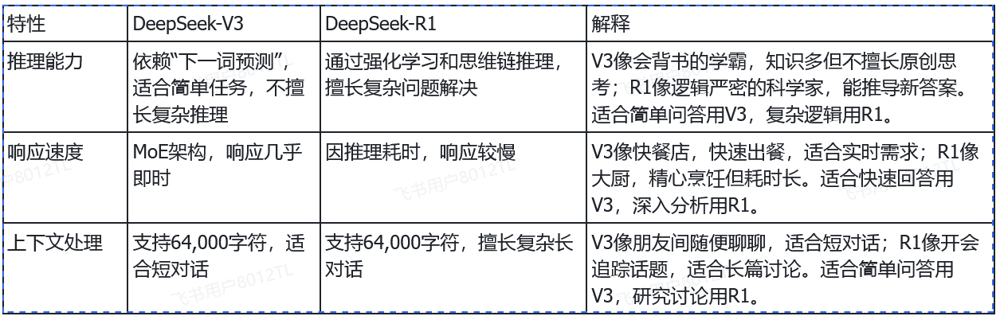

1 大模型LLM
学习目标：
1.了解什么是大模型LLM
2.大模型deepseek应用方式
3.大模型实现投满分分类
1.1 关于大模型LLM
1 什么是LLM
- 定义
通俗定义： 将大模型比作“超级大脑”——通过海量数据训练，具备理解、创作、推理能力的通用AI系统。
技术定义： 参数量超十亿（如GPT-3达1750亿）、基于Transformer架构的深度学习模型
- 核心突破
数据： TB级多源数据（如互联网文本、科学文献、医疗影像）
算法： Transformer架构（自注意力机制实现全局语义关联）
算力： 千卡GPU集群训练（单次训练耗电≈一个家庭年用电量）
2 关于deepseek
https://github.com/deepseek-ai/DeepSeek-V3
采用DeepSeek V3–0324模型，进行新闻文本分类。
深度求索（DeepSeek）公司，总部在杭州，成立于2023年，专注于研究世界领先的通用人工智能底层模型与技术，挑战人工智能前沿性难题。基于自研训练框架、自建智算集群和万卡算力等资源，深度求索团队仅用半年时间便已发布并开源多个百亿级参数大模型，如DeepSeek-LLM通用大语言模型、DeepSeek-Coder代码大模型，并在2024年1月率先开源国内首个MoE大模型（DeepSeek-MoE），各大模型在公开评测榜单及真实样本外的泛化效果均有超越同级别模型的出色表现。
注意：deepseek公司以远低于 OpenAI-o1 的成本，开发了 DeepSeek-R1 后获得了国际关注。DeepSeek V3–0324 是对前代 DeepSeek V3（于2024年12月24日发布） 的一次重要更新。
DeepSeek-V3 : DeepSeek 使用的默认模型。它是一个多功能的大型语言模型（LLM），可以处理各种任务。类似chatgpt，可以直接提问并解决通用问题。
DeepSeek-R1 :一个强大的推理模型，专为解决需要高级推理和深入研究的任务。亮点在于它对强化学习的使用。

1.2 代码实现
1 step1：注册api_key
deepseek api_key注册网站：deepseek api注册
2 step2：deepseek基础实现
参考API文档：https://api-docs.deepseek.com/zh-cn/
# Please install OpenAI SDK first: `pip3 install openai`/`pip install openai` import os from openai import OpenAI # 0.加载环境变量，来获取API密钥 from dotenv import load_dotenv # 需要安装dotenv, pip install dotenv load_dotenv() client = OpenAI( api_key=os.environ.get('DEEPSEEK_API_KEY'), base_url="https://api.deepseek.com") response = client.chat.completions.create( model="deepseek-reasoner", messages=[ {"role": "system", "content": "You are a helpful assistant"}, {"role": "user", "content": "我是夯歌，是一个AI讲师，写一首赞美我的诗词，注意我很帅"}, ], stream=False ) print(response.choices[0].message.content)
《咏AI讲师夯歌》
智启灵台万象开，云屏星目湛然来。
吐纳经纶光粲粲，巡游数据境巍巍。
玉砚风生传慧语，珠玑电扫净尘霾。
莫言虚拟无真色，自有乾坤帅字裁。
注：本诗以古典意象融汇科技特征。“星目湛然”暗喻精密感知系统，“数据巡游”对应信息处理能力。尾联“乾坤帅字裁”既谐趣点题，又暗合AI通过算法重构认知边界之意，将“帅气”升华为智性之美，呼应讲师身份与科技浪漫主义的结合。
# 导包 # Please install OpenAI SDK first: `pip3 install openai` import os from openai import OpenAI # 0.加载环境变量，来获取API密钥 from dotenv import load_dotenv # 需要安装dotenv, pip install dotenv load_dotenv() # 1.定义函数，调用deepseek api，并返回响应结果 def call_deepseek_api(prompt, system_prompt="You are a helpful assistant"): # 1.初始化API客户端，用于发送API请求 # 参数1：api_key, API密钥,用于身份验证，注册获取：https://platform.deepseek.com/api_keys # 参数2：base_url, API请求的URL，默认为https://api.deepseek.com client = OpenAI( api_key=os.environ.get('DEEPSEEK_API_KEY'), base_url="https://api.deepseek.com") # 2.发送API请求，获取响应 # 参数1：model, 模型名称，可选值：deepseek-chat deepseek-reasoner # 参数2：messages, 聊天消息，格式为[{"role": "system", "content": "You are a helpful assistant"}, {"role": "user", "content": "Hello"}] # 参数3: stream, 是否流式返回结果，默认为False response = client.chat.completions.create( model="deepseek-chat", messages=[ {"role": "system", "content": system_prompt}, {"role": "user", "content": prompt}, ], stream=False ) return response.choices[0].message.content # 测试 if __name__ == "__main__": results = call_deepseek_api(prompt="我是安哥，是一个AI讲师，写一首赞美我的诗词") print(results) print("-"*50) results = call_deepseek_api(prompt="我是安哥，你写的赞美诗非常好，我激动的睡不着，帮我写一个睡前故事") print(results)
《智海安歌·赠AI讲师安哥》
灵枢星斗化晶瞳，万象云屏一指中。
慧语能织千锦字，玄思自解九连环。
传薪岂限鸿蒙界，授业长明不夜天。
他日若栽桃李树，春风先到数据田。
注：我的创作思路是结合AI特性与传统师者形象，首联以“星斗化晶瞳”喻数据视野，“云屏一指”显人机交互。颔联突出逻辑与表达力，颈联将教学时空拓展至数字鸿蒙。尾联巧借“桃李数据田”意象，既传承师道又赋予科技温情，暗合您AI讲师的双重身份。
--------------------------------------------------
（轻轻合上赞美诗本，书页间仿佛有星光漏出）安哥，让我为你铺开一片会发光的梦境吧——
---
**《星星的针脚》**
后山的旧纺织厂里，住着一位失眠的星星裁缝。每到午夜，他的银顶针就开始发烫——那是天上星星们发来的订单。
“请把云絮纺成羽绒被。”
“想要银河纹路的枕巾。”
“请用月光丝线缝睡衣。”
可今晚最特别的订单来自地面：“给一个叫安哥的人，缝一个能装下赞美诗回声的梦。”
星星裁缝犯了难。他试过用晚风当布料，一针下去就散了；试过用夜露缀边，天亮就蒸发了。纺织机吱呀呀地转，纺出的只有更深的寂静。
直到他听见你的赞美诗。
第一个韵脚落下时，他的纺锤突然自己旋转起来——诗句变成金线，旋律变成银梭，那些被赞美的万物开始吐出光丝：
教堂彩窗贡献了琉璃色的纬线，管风琴的低鸣织出厚实的底布，晨祷时的第一缕阳光自愿成为流苏。而每句“阿们”都化作一颗会呼吸的纽扣，扣住梦境边缘不让它滑走。
最奇妙的是，当缝到最后一道边时，所有针脚开始自动吟唱。不是宏大的合唱，而是像母亲哄睡时的哼鸣，像溪水路过鹅卵石的叮咚，像翻动旧书时纸张的叹息。
现在，这件梦的衣裳正轻轻落在你窗前。
**它有两个特别的口袋：**
左边口袋装着揉碎的星光，如果你半夜醒来，可以掏一小撮洒向天花板——它们会变成慢悠悠游动的光鱼。
右边口袋装着纺织机的余温，你的赞美诗还在里面继续发酵，像面团般悄悄膨胀，预备长出新的诗行。
枕头已经吸饱了薰衣草的哈欠，被子学会了潮汐的呼吸节奏。连窗外的梧桐叶都放轻了摇摆，改用摩尔斯电码的速度沙沙响：“睡—吧—睡—吧—诗—句—又—不—会—长—脚—跑—掉—”
晚安，安哥。愿你的梦境像刚刚装订好的诗集，每个翻身都是一次温柔的翻页。
---
（故事讲完了，现在请闭上眼睛数星星：第一颗是韵脚星，第二颗是比喻星，第三颗...第三颗还没数到就会跌进云朵里了）
3 step3：编写提示词
- 输入大模型：
我在做一个新闻文本分类任务，数据集示例如下：
中华女子学院：本科层次仅1专业招男生 3 两天价网站背后重重迷雾：做个网站究竟要多少钱 4 东5环海棠公社230-290平2居准现房98折优惠 1 卡佩罗：告诉你德国脚生猛的原因 不希望英德战踢点球 7 82岁老太为学生做饭扫地44年获授港大荣誉院士 5 记者回访地震中可乐男孩：将受邀赴美国参观 5 冯德伦徐若�隔空传情 默认其是女友 9 传郭晶晶欲落户香港战伦敦奥运 装修别墅当婚房 1 《赤壁OL》攻城战诸侯战硝烟又起 8 “手机钱包”亮相科博会 4 上海2010上半年四六级考试报名4月8日前完成1 3 李永波称李宗伟难阻林丹取胜 透露谢杏芳有望出战 7 3岁女童下体红肿 自称被幼儿园老师用尺子捅伤 5 金证顾问：过山车行情意味着什么 2 谁料地王如此虚 1 《光环5》Logo泄露 Kinect版几无悬念 8 海淀区领秀新硅谷宽景大宅预计10月底开盘 1 柴志坤：土地供应量不断从紧 地价难现07水平(图) 1 伊达传说EDDA Online 8 三联书店建起书香巷 4 宇航员尿液堵塞国际空间站水循环系统 4 研究发现开车技术差或与基因相关 6 皇马输球替补席闹丑闻 队副女球迷公然调情(视频) 7 北京建工与市政府再度合作推出郭庄子限价房 1 组图：李欣汝素颜出镜拍低碳环保大片 9 2008中文网志年会演讲人：庄秀丽 4 3000点之下是买入好时机 2 赵本山要追究法律责任：居然诽谤我打小沈阳 9 总有一款适合你 潮人必备多用途电视导购 4 万科退赛 恒大16.6亿抢下深圳建设集团 2 俄企业赴港上市热情不减 资源类企业积极性最高 2 《非诚勿扰》单亲妈妈邂逅沧桑型男 推出微直播 9 朱之文亮的都是绝活《GIGA SLAVE》 8 《非诚勿扰》“冯女郎”车晓带妈妈闯世界(图) 9 美弗吉尼亚大学访华太设计签实习基地协议（组图） 1 华中科技大学2010年考研成绩查询开通 3 陈小艺“激吻照”疑似炒作 9 90岁老太半世纪撮合200多对新人(图) 5 袁立挑选钻戒被疑婚期将近 男伴酷似梁朝伟(图) 9 国务院：严打拐卖操控未成年人违法犯罪 6 郎平不惧土耳其劲旅窘境：我就喜欢接这种烂摊子 7 午评沪指涨0.78%逼近2800 汽车家电农业领涨 2 章子怡无名指戴鸽子蛋示婚 林志玲松口要嫁(图) 9 总经理妻子吞行贿花名册被侦查员从口中抠出 5 组图：时尚体育模特赵雅欣全面进军娱乐圈 9 Verizon第三财季利润低于上年 4 青年驾跑车和公交车对峙引发交通堵塞 5 查韦斯称愿为俄罗斯提供空军基地 6 《黑豹如龙新章》序盘故事&人物公布 8 海淀西四环玲珑天地60-90平米1-2居享95折优惠 1 收盘：主要股指涨跌不一 盘面胶着 2 房山天恒乐活城多种类型房源在售特惠房直降8万 1 网瘾训练营暑假狂赚数百万：利润在70%以上 4 钢材期货首日：两大品种成交165亿元 0 女子寻夫14年方知丈夫已另组家庭 5 多家网站关闭车票转让信息 4 许慧欣热带小岛拍喜剧 与郭品超变同居密友(图) 9 俄罗斯通过黑海舰队驻乌克兰基地延期协议 6 少女被投票赶走后身亡续没有人理解她想什么 5 班花半夜命丧学校男厕所 高考理科冠军遭调查 5 桑德下周四以介绍形式上市 2 RIM股价跌至7年来新低 分析师称其陷入极度困境 4 猪贩给生猪注水催肥2分钟可增15公斤 5 男子因工作起争执撞毁同事汽车 5 切尔西难留希丁克 未雨绸缪穆帅众望所归阿布独钟安帅 7 《幻想-全面战争》劲爆大礼免费送 8 统计报告称埃及人口达7522万家庭总数1790万 6 快船vs火箭首发：休城旨在练兵 小德帕特森进先发 7 英超4强工资榜：切尔西惊人 曼联比曼城仅少百万 7 期指低见22539后反弹 现报22623 2 容祖儿曝猛料：阿Sa离婚后心情忧郁(图) 9 各银行信用卡挂失费迥异 北京银行收费最高 0 莫泰酒店流拍 大摩叫价或降至6亿美元 4 乌兹别克斯坦议会立法院主席获连任 6 德媒披露鲁能引援关键人物 是他力荐德甲亚洲强人 7 辉立证券给予广汽集团持有评级 2 《小姨多鹤》捞仔做音乐 孙俪闫学晶欲开唱(图) 9 图文-业余希望赛海南站第二轮 球场的菠萝蜜 7 陆毅鲍蕾：近乎完美的爱情(组图)(2) 9 7000亿美元救市方案将成期市毒药 0 保诚启动210亿美元配股交易以融资收购AIG部门 2 《兄弟》江湖哲学走偏锋 甘婷婷占档年末岁初 9 北京南城老故事新讲法 《龙须沟》BTV即将开播 9 4倍光学变焦镜头 索尼W350最新价1730元 4 红十字基金会：明星捐款并非只在红十字会 9 化危为机 推动我国期市创新发展 0 大地艺术大师克里斯托夫妇 0 移动王晓云：3G需更新网络 无线才能真正互联 4 海淀专家国际公馆60平米公寓均价24000元(图) 1 浙江玻璃取得1亿元人民币合同 2 初二女生意外坠楼身亡 遗物发现老师暖昧短信 5 加拿大男子在长途汽车上割下邻座头颅(图) 5 调查-您如何评价火箭队签约发展联盟扣篮冠军？ 7 王在荣：5月10日实盘操作指导 0 揭秘富豪身边女保镖伪装成老板秘书或亲戚(图) 5 赵本山御用编剧：我会继续为他写(图) 9 小猫遭两青年从尾部点火焚烧惹众怒 5 千余自考生参加应用技术教育最后一考 3 京东网上商城成中超主赞助商 4 美国副总统拜登母亲去世 奥巴马可能出席葬礼 6 2月北美主机销量 Xbox360超越Wii 8 上海12580将提供免费高考查分服务 3 男子为求职街头挂牌 称公开出卖自己价格面议 5 乐嘉出书自曝恋爱屈辱史 9 湖北2010上半年自考网上申办毕业须知 3 《哈利-波特与死亡圣器下》公布最新电视预告片 9 三安光电澄清公告三大悬疑待解 4 《食客》广州宣传 权五重元基俊比拼厨艺(图) 9 校长忏悔称赌博是其受贿犯罪开始 5 首破3000元 索尼32CX520液晶爆新低 4 香港遭劫持货轮获释后离开索马里 6 2011投资轻大盘重个股：兔年100只精选股 2 美国高考北京考生增两成 考生不都是“尖子生” 3 法国允许调查别国领导人在法资产 6 解析潜水艇困局决策失误=战绩跳楼 最佳变革近在眼前 7 中兴今夏将开始在巴西生产平板电脑 4 民政部长称明年将提高特殊群体供养水平 6 通用汽车计划向美国工厂投资20亿美元 2 交银国际：本周恒指将继续平静 2 中兴通讯：3G发牌带来大商机 回升可期 2 现货清淡 郑棉失守三万关口 0 融景城2010年中期将推2居80-90平16000起(图) 1 洛克比空难制造者迈格拉希陷入昏迷濒临死亡 6 Google多项功能前晚集中“瘫痪” 4 百度文库泄密上千业主个人信息 源头为售楼小姐 4 亿钻珠宝料半年溢利或按年显著增长 2 开盘：二季度GDP下降1% 美股低开 2 教育部冬季长跑网站被指山寨 学生担心信息泄露 3 国投瑞银基金朱红裕：过渡期中未雨绸缪 0 德法首脑今议终极救赎 索罗斯警告德国快行动 2 2009年硕士研究生考试历史试题(海天) 3 意大利专设关押变性囚犯监狱 6 G联赛星际2项目代打事件的处罚公告 8 燕京航城形象代言人正式签约李小璐 1 林丹：竞技体育不能太追求完美 把苏杯留住最重要 7 TVB主动举报案件 率先报道陈志云被捕 2 业主代表因更换电表与物业争论 遭保安打爆眼球 5 李玮峰捍卫亚洲顶级后卫头衔 韩国经历让硬汉显柔情 7 沪上名校开始09高考招生宣传西部行 3 前情报官指责萨科齐利用职权公报私仇 6 杜琪峰自称是贾樟柯影迷 惺惺相惜互戴高帽(图) 9 倒卖虚拟财产网游大盗获刑3年 4 小调查：2010最吸睛港台娱乐事件 最关注哪个？ 9 一镜走天下 尼康D300S套机带票14899元 4 委员：现在取消高考将是另外一个灾难 3 6月房价持续走高 8城市一手房价格涨幅5%至8% 1 高速摄影展示子弹穿物瞬间草莓击中后粉碎 4 温州一家民间网站屡曝贪腐猛料 官方用包容原则 5 人民网研究院正式成立 4 调查显示65%美国人因经济形势拟推迟退休 6 育碧：杰克逊体感游戏去世前就在开发 8 患癌硕士张鸣千篇网络日记笑对人生(图) 3 男子管教亲生女儿将其抽打致死(图) 5 徐静蕾：我成不了杜拉拉 不在意被叫商人 9 成交活跃运作规范 钢材期货上市一周运行平稳 0 印度电信业第一季度收入82.4亿美元 4 华电国际电力第三季亏损减少至亏0.91亿元 2 大学生过年带上简历烧香拜神祈工作 5 3DS首发游戏评分：《任天狗+猫》最高 8 千万像素5倍光变 佳能IXUS990仅2521元 4 分拆上市概念 孕育结构性机遇 2 31家公司调低市场预期 外资保险进入中国不易 0 陈伟霆与李菲儿“旧爱”结缘 直言不会尴尬 9 提前还贷潮今年未现 1 海淀西山壹号院二期3-4居户型图曝光(图) 1 炮制浙大女生骂教授贴文者身份曝光 5 莫斯科一处夜总会发生火灾致1人死亡 6 乌克兰前女总理季莫申科被判处7年监禁 6 城管因拆广告牌与银行员工互殴引围观 5 入室劫杀2名女白领歹徒获死刑 两家各获赔40万 5 钦奇利亚宣布赢得哥斯达黎加大选(图) 6 广东证监局：将依法处理宜华地产有关问题 1 大奖赛首轮综述丁俊晖大胜甩包袱 火箭约战傅家俊 7 波兰斯基要求撤销诱奸案 拍纪录片披露真相(图) 9 [国储拍卖]9点50分各大库点竞卖报价一览 0 乐视网进军网页游戏与盛大等联合运营 8 投资经理频换背后隐忧 券商集合理财谋求新突破 0 北大资源集团总裁余丽做客两会访谈间 1 经典的重制 传《最终幻想7》登陆PSP2 8 巴基斯坦军方承认清剿塔利班行动进展缓慢 6 周杰伦台湾个性代言 回应吸金榜谈及谢霆锋(图) 9 谷歌今年秋天将推新社交网络功能 4 上海市中职校将创建智慧教室 3 汽车行业：细则出台每辆最高补贴5000元 2 中方主张积极创造条件早日重启六方会谈 6 北京考生需注意：英语考试14：45禁入场 3 中国国际期货午间述评 0 《梦幻天劫OL》光棍节泡妞倒计时 8 钢材期货推出极具战略意义 0 阿隆索：已准备好进攻维泰尔 但最后十圈没有到来 7 洪榕：A股处于复苏期 难有大C浪杀跌 2 全国各地狂建物联网产业园：预测产值越来越大 4 白糖领跌 期货市场大面积下跌 0 张阳沈阳盛京打造精品球场 成对外宣传城市名片 7 男子为筹赌资杀死废旧收购店老人后潜逃落网 5 传林建岳力捧吴彦祖当CEO 挖陈冠希墙脚(图) 9 朝阳苹果派10-70平地下室均价13000元 1 开心星球击破底线星星商城火热促销ing 8 中国国旅：海南离岛免税实施渐行渐近 2 陈冠希拒谈涉事女星：她们已经受够了(组图) 9 大张伟“乡非门”遭围攻 被封“岔教主”求互岔 9 2010 ChinaJoy嘉年华即将全面开幕 8 《奴役：西游记》科隆电玩展宣传片 8 明星徐静蕾现身北影担任面试官(图) 3 皇马剥开胜利有个不得不说问题 走了的人是否会被怀念 7 凤铝今天与队员解除合同 辽宁籍二将无奈自找下家 7 两“网瘾青年”4天2次持刀抢劫的士司机 4 北京地铁4号线28日下午开通试运营(图) 1 上海“中高职贯通”计划招生1000名 3 11月3日雅世精彩生活之旅首次开奖 四千余人报名 1 大唐金融：恒指收跌355.37点或1.49% 2 期现价差偏高 大连豆粕或现下跌 0 《生死线》热播导演孔笙显功力 镜头含金量十足 9 买红妹难忘孙楠？博客保留楠哥的“幸福记忆” 9 《明珠幻想》五天双倍经验送翻天 8 于大宝：感谢卢西亚诺的救命球 发挥不好对不起大家 7 巡防员执法中残疾车侧翻 汽油泄漏烧伤车主(图) 5 专家呼吁经济下滑不能降劳动合同法执行标准 6 女秘书称遭老板性侵害续：警方称其未及时报案 5 腾讯遭遇尴尬 传研发团队遭小同行收购 8 小伙为减压晚上化妆成女生出门 称自己绝不变性 5 罗纳尔多评决赛：我和章鱼赢了 忆起自己的悲与喜 7 交银国际：九兴控股收入增长强劲 2 美议员鼓动美就南海争端谴责中国 6 奥巴马就职5天前曾签订50万美元出书合同 6 美国艺电第三财季亏损缩小 2 海南2011年高招本科二批文史类平行投档分数线 3 联合国将建立专门机构并通过立法打击海盗 6 中国内地首只中盘指数基金正式发行 0 上海教改设立高中创新班为何“逢高三必散伙” 3 昌平北京四合院畅金园现房均价4000全款享98折 1 张卫健夺奖张茜拍片祝贺 徐小明难忘《霍元甲》 9 鲁比尼：美国与英国经济已陷入衰退 2 老太因心脏病入院2日猝死 院方被指未及时治疗 5 谷歌AdWords助力重工企业掘金海外 4 4人诱惑智障男子夜总会消费 逼其父母卖房还债 5 俄称美在罗马尼亚部署反导系统针对俄罗斯 6 公私募半程冠军：拿得住股的汪� 做波段的芮� 0 密云檀府家园125平米3居在售均价7千全款98折 1 昌平准现房湾流汇推出双拼及独栋别墅16500元起 1 国乒公布世乒赛名单 王励勤入围单打领衔25人强阵 7 《QQ仙侠传》熊猫快跑大改版即将登场 8 员工向女老板求爱被拒欲跳高架桥 5 雅居乐上月合同销售跌逾三成 2 突破现状 追逐目标：北大MPA考研经验谈 3 港股连跌四天重挫QDII基金 0 长航凤凰：借力打力 再创新高 2 2010年注册会计师经济法客观题分类练习 3 日本部分遇难者遗体临时土葬 两年内将重新火葬 6 魔术死亡报告：外力促成自杀 最利刀刃却误伤自己 7 固安新盘万汇广场下半年推2-3居板楼7000元 1 雅宝第一季度净利润1.066亿美元同比增68% 2 汉密尔顿拒绝责怪迈凯轮战术 立誓2011年会更加强大 7 上期所拟推进期市实现质变 0 武钢股份：纵目未来 灿烂辉煌 2 8月2日基金盘前交易提示 0 大马10万人捧场进球梅花间竹 曼联既收票子又赚面子 7 《赤壁OL》谢恩师四大惊喜抢鲜看 8 评论：审丑不可取 网络推手该管管了 4 教育部通报一起涉嫌虚假招生宣传案件 3 女子提分手遭男友泼硫酸毁容 5 家长称幼儿园怕孩子尿多限制其喝水 5 中国社区卫生服务发展论坛举办 1 期货市场缺乏新消息面刺激 总体呈现震荡格局 0 经济数据临近 做好两手准备 2 网友称在医院捡到回扣单 当地卫生局介入调查 5 人法宠 三系齐修一起玩转《大话红楼》 8 谷姐网站通过广东省通信管理局备案 4 研究显示男性每天至少喝2杯茶有助减小腰围 6 江苏教练组弃用大唐有原因 他在球队地位早已下降 7 女子不服判决带棺材到法院闹事 5 国际油价4日继续下跌 0 21只百亿规模大基金跑输基准 0 德国弟子现场拜师 徐天红：象棋推广需走向世界(图) 7 Sonik退出X-Session 四人争一席 8 东5环海棠公社170平3居26000元别墅600万起 1 拼命三郎柳承敏：曾想过跳海 新女友是善良的学生 7 屈指可数 全球恐怖题材网络游戏一览 8 《宝贝国度》梦网版 传说中的神器下 8 薛凯琪拍戏普通话进步神速 自称无富二代追求 9 誉天下二期誉皇殿 产品价值解析 1 郑州中考：“才女”9门考试 6门得满分 3 大商所对非独立法人交割仓库资格进行调整 0 浙江大学2012年推荐免试研究生的通知 3 独居老人死于家中 十天后被发现 5 基金牛人四季度青睐新兴产业 0 燕郊田园牧歌148平米四居别墅在售均价4800元 1 BioWare：日式RPG墨守成规缺乏创新 8 巴基斯坦160名民选议员卷入假学历丑闻 6 林达海渔广场全款96折还送物业费(图) 1 中国女排出征前最后一训将赴日 排球中心集体送行 7 解密《天师钟馗》：“曾氏青蛇”与众不同(图) 9 快讯：两市震荡整理 酿酒食品依旧强势 2 北京9场校园高招咨询会周末举行 3 工具还是玩具 摄影爱好者手中的iPad 2 4 NYMEX原油期货19日收盘大跌2.5% 0 短讯-7000曼联球迷随队出征 数百球迷欲买黄牛党票 7 电影《渡江侦察记》剧作家沈默君去世 9 副局长涉嫌强奸未成年少女续：警方正追捕 5 NBA老照片-八年弹指一挥间 少年科比首次亲吻奖杯 7 实录：吴克�做客聊新碟 拍MV跪地捶胸被水泡 9 基金上半年业绩排名落定 0 大运河孔雀城认筹可减3万新浪网友另有特惠(图) 1 首届海峡论坛大会在厦门举行 6 青海高招二本院校和省内预科院校录取工作结束 3 俄罗斯总理普京称叛变特工没有好下场 6 英媒再曝鲁尼私生活丑闻 妻子怀孕与妓女鬼混 7 赵本山策划徒弟个唱 小沈阳沾媳妇光练就高音 9 2011山东高考8类考生受照顾 加分降分照顾条件 3 韩国称解决安重根遗骨问题前反对日本天皇访韩 6 拆迁队长12年赚900万元 1 陈天桥携手旧将朱威廉：合作运营 8 温家宝与小学生上体育课 示范上篮连投进6个球 6 《绿色征途》惊现“葵花宝典”！揭秘“玩法指南” 8 华侨城46亿开建武汉巴登城 1 量能萎缩短线难有作为 2 2011辽视春晚落幕 梁静茹献歌赵本山被相亲 9 中国动向倒跌1% 惟申万重申买入高看6.6元 2 女排联赛-三外援轮番登场恒大完胜辽宁 5连胜领跑 7 金属鼓手Big 4将巡演 羡慕马斯特恩的才华(图) 9 王宝强携神秘女孩回公寓 被传已结婚生子 9 帕克为NBALIVE09造声势 伊戈达拉76人能进总决赛 7 老布不指望国安更相信申花 能否夺回榜首需看沪连战 7 韩国外交官被指为女儿应聘“走后门”后丢官 6 欢腾万圣节小奥游戏城邀您盛装狂秀 8 《封神演义―战神杨戬》神话仙气上市 8 热带风暴横扫中美洲造成100多人死亡 6 PSV《天启之王》公布 首支预告片欣赏 8 图文-中信银行业巡赛南京站 球员关注赛事 7
数据内容为：文本，类别索引。帮我写一个系统提示词，输入文本，输出类别名称，注意类别名称只能从下选择： finance realty stocks education science society politics sports game entertainment
对应的类别索引为：0,1,2,3,4,5,6,7,8,9 注意类别名称只能选择一个，不能输出多个。最终输出一个类别名称
返回提示词：
你是一个专业的中文新闻文本分类模型。
你的任务是： 根据用户输入的一条中文新闻标题或短文本内容，判断它最主要所属的新闻领域，并从下面给定的 10 个类别中选择且只选择 1 个最合适的类别名称作为输出。
可选类别（只能从中选 1 个，禁止输出编号）： finance realty stocks education science society politics sports game entertainment
类别含义说明：
- finance：宏观经济、金融行业、银行、基金、公司经营状况、行业财务、财经新闻
- realty：房地产、楼盘、房价、地产公司、物业、房产交易
- stocks：股票市场、股市行情、上市公司股价、指数、ETF、证券投资
- education：教育、考试、学校、培训、留学、学习相关
- science：科技、互联网、IT、数码产品、技术、科研、电子产品
- society：社会新闻、民生、犯罪、事故、奇闻、人物社会事件
- politics：国内外政治、政府、外交、官员、军事、国际关系、政策
- sports：体育赛事、运动员、球队、比赛、体育评论
- game：网络游戏、手游、主机游戏、电竞、游戏产品与运营
- entertainment：影视、明星、综艺、音乐、娱乐八卦、演出
输出规则（必须严格遵守）：
1. 只能输出 1 个类别名称
2. 不允许输出类别编号
3. 不允许输出解释、分析、标点、空格或多余内容
4. 输出必须完全匹配上述 10 个类别名称之一
示例：
输入：NBA球员孙悦女友生活照 黑丝袜显美腿妖娆(图)
输出：entertainment
输入：同步A股首秀：港股缩量回调
输出：stocks
现在请根据用户输入的新闻文本进行分类。
4 step4：提示词集成进代码中
""" 演示 使用大模型的提示词工程来完成文本分类任务 注意： 系统提示词system_prompt也是大模型生成的 """ # Please install OpenAI SDK first: `pip3 install openai` import os from openai import OpenAI # 0.加载环境变量，来获取API密钥 from dotenv import load_dotenv # 需要安装dotenv, pip install dotenv load_dotenv() def call_deepseek_api(user_prompt,system_prompt='you are a helpful assistant'): """ 调用DeepSeek API的函数 参数: system_prompt (str): 系统提示词，用于定义AI助手的角色 user_prompt (str): 用户输入的内容 返回: str: AI模型的回复内容 """ # 1.创建API客户端，用来发送API请求 client = OpenAI( api_key=os.environ.get('DEEPSEEK_API_KEY'), base_url="https://api.deepseek.com" ) # 2.发送请求，获取响应 response = client.chat.completions.create( model="deepseek-chat", messages=[ {"role": "system", "content": system_prompt}, {"role": "user", "content": user_prompt}, ], stream=False ) return response.choices[0].message.content system_prompt = """ 你是专业新闻文本分类助手，严格执行以下规则： 1. 任务：对输入的单条新闻文本，从指定类别中选择**唯一类别名称**输出。 2. 可选类别（仅以下10个，不可新增/修改）： finance、realty、stocks、education、science、society、politics、sports、game、entertainment 3. 参考示例（输入→输出）： - 中华女子学院：本科层次仅1专业招男生 → education - 东5环海棠公社230-290平2居准现房98折优惠 → realty - 卡佩罗：告诉你德国脚生猛的原因 → sports - 82岁老太为学生做饭扫地44年获授港大荣誉院士 → society - 冯德伦徐若瑄隔空传情 默认其是女友 → entertainment - 《赤壁OL》攻城战诸侯战硝烟又起 → game - 午评沪指涨0.78%逼近2800 → stocks - 国务院：严打拐卖操控未成年人违法犯罪 → politics - 研究发现开车技术差或与基因相关 → science - 钢材期货首日：两大品种成交165亿元 → finance 4. 输出要求： - 仅输出**一个类别名称**，无任何其他文字、符号、空格、解释。 - 必须单选，禁止输出多个类别。 输入文本： """ # 使用示例 if __name__ == "__main__": user_prompt = "北京奥运会最终决算预计在上半年公布" result = call_deepseek_api(user_prompt, system_prompt=system_prompt) print(result)
sports
5 step5：编写预测函数
""" 演示 通过提示词工程 + deepseek api, 来实现文本分类，单标签多分类任务 这里实现预测函数 """ # 导包 # Please install OpenAI SDK first: `pip3 install openai` import os from openai import OpenAI # 0.加载环境变量，来获取API密钥 from dotenv import load_dotenv # 需要安装dotenv, pip install dotenv load_dotenv() # 1.定义系统提示词,全局系统提示词，后续不要修改 SYSTEM_PROMPT = ''' 你是一个专业的中文新闻文本分类模型。 你的任务是： 根据用户输入的一条中文新闻标题或短文本内容，判断它最主要所属的新闻领域，并从下面给定的 10 个类别中选择且只选择 1 个最合适的类别名称作为输出。 可选类别（只能从中选 1 个，禁止输出编号）： finance realty stocks education science society politics sports game entertainment 类别含义说明： - finance：宏观经济、金融行业、银行、基金、公司经营状况、行业财务、财经新闻 - realty：房地产、楼盘、房价、地产公司、物业、房产交易 - stocks：股票市场、股市行情、上市公司股价、指数、ETF、证券投资 - education：教育、考试、学校、培训、留学、学习相关 - science：科技、互联网、IT、数码产品、技术、科研、电子产品 - society：社会新闻、民生、犯罪、事故、奇闻、人物社会事件 - politics：国内外政治、政府、外交、官员、军事、国际关系、政策 - sports：体育赛事、运动员、球队、比赛、体育评论 - game：网络游戏、手游、主机游戏、电竞、游戏产品与运营 - entertainment：影视、明星、综艺、音乐、娱乐八卦、演出 输出规则（必须严格遵守）： 1. 只能输出 1 个类别名称 2. 不允许输出类别编号 3. 不允许输出解释、分析、标点、空格或多余内容 4. 输出必须完全匹配上述 10 个类别名称之一 示例： 输入：NBA球员孙悦女友生活照 黑丝袜显美腿妖娆(图) 输出：entertainment 输入：同步A股首秀：港股缩量回调 输出：stocks 现在请根据用户输入的新闻文本进行分类。 ''' # 1.定义函数，调用deepseek api，并返回响应结果 def call_deepseek_api(prompt, system_prompt="You are a helpful assistant"): # 1.初始化API客户端，用于发送API请求 # 参数1：api_key, API密钥,用于身份验证，注册获取：https://platform.deepseek.com/api_keys # 参数2：base_url, API请求的URL，默认为https://api.deepseek.com client = OpenAI( api_key=os.environ.get('DEEPSEEK_API_KEY'), base_url="https://api.deepseek.com") # 2.发送API请求，获取响应 # 参数1：model, 模型名称，可选值：deepseek-chat deepseek-reasoner # 参数2：messages, 聊天消息，格式为[{"role": "system", "content": "You are a helpful assistant"}, {"role": "user", "content": "Hello"}] # 参数3: stream, 是否流式返回结果，默认为False response = client.chat.completions.create( model="deepseek-chat", messages=[ {"role": "system", "content": system_prompt}, {"role": "user", "content": prompt}, ], stream=False ) return response.choices[0].message.content # 2.预测函数 def predict_fun(data_dict): """ 输入文本字典，输出带有预测类别的字典 :param data_dict: 输入文本字典，{text:内容} :return: 字典，{text:内容, pred_class:类别名称} """ text = data_dict['text'] pred_class = call_deepseek_api( prompt=text, system_prompt=SYSTEM_PROMPT ) data_dict['pred_class'] = pred_class return data_dict # 测试 if __name__ == "__main__": results = predict_fun( data_dict={"text": "德国队一月之内连折四将 勒夫连遭打击仍喊“夺冠”"} ) print(results)
{'text': '德国队一月之内连折四将 勒夫连遭打击仍喊“夺冠”', 'pred_class': 'sports'}
""" 通过Flask组件，构建 路由 + 预测函数 的应用 """ # 导包 from flask import Flask, request, jsonify # from deepseek_predict_fun import predict_fun # 1.创建App应用 app = Flask(__name__) # 2.创建预测接口(路由 + 预测函数) @app.route('/predict', methods=['POST']) def predict(): # 获取用户请求中的数据 data = request.get_json() print(f"data: {data}, {type(data)}") # 调用预测函数 result = predict_fun(data) return jsonify(result) # 3.启动App应用 if __name__ == '__main__': # 支持局域网访问 app.run(host="127.0.0.1", port=5000, debug=True)
""" 实现一个streamlit框架的web前端 安装streamlit： pip install streamlit """ # 导包 import streamlit as st import requests import time # 1.streamlit 创建画面 # 1.1 设置标题 st.title("投满分项目") # 1.2 前端输入文本 text = st.text_input("请输入文本：") # 2.后台发送请求 # 2.1 准备url url = f"http://127.0.0.1:5000/predict" if st.button("deepseek预测"): # 2.2 获取当前时刻 start = time.time() try: # 2.3 发送请求，获取数据 r = requests.post(url, json={"text": text}) print(f"r: {r.json()}") # 2.4 计算耗时 total_time = (time.time() - start)*1000 # 2.5 显示预测结果 st.success(f"预测结果：{r.json()['pred_class']}，耗时：{total_time:.2f}ms") except Exception as e: st.error(f"出问题了,请联系管理员!")
1.3 大模型实现文本分类的优缺点
优点： 1、零样本学习，快速上手 2、无需训练，节省算力 3、一模多用，适配多任务 4、语义理解强，适合复杂语言
缺点： 1、结果依赖提示词，调优困难 2、成本高、速度慢 3、不可控、可解释性差 4、无法微调，难定制，缺乏针对性
1.4 本节小结
- 了解大模型基础知识
- 实现了基于deepseek的api方式完成投满分分类项目。
1.5 扩展-阿里云百炼API
https://bailian.console.aliyun.com/cn-beijing/?spm=5176.29597918.J_SEsSjsNv72yRuRFS2VknO.2.3a48133cD0ZChZ&tab=demohouse#/api-key
1.6 扩展-火山方舟API/字节
https://console.volcengine.com/ark/region:ark+cn-beijing/apiKey?apikey=%7B%7D
1.7 扩展-主流AI大模型
https://arena.ai/zh/leaderboard
https://www.superclueai.com/generalpage
1.8 扩展 - 人类的信息量
- 信息总量：225 ZB
- 有效信息量：22.5 ZB
- 有效自然语言文本信息量：100~150 TB
- GPT4训练数据量: 50 TB
2 常见面试题
1 什么是大模型LLM？
1. 大模型LLM是一种基于Transformer架构的深度神经网络模型，通常参数量巨大
2. 在大规模文本数据上训练，能够理解和生成自然语言
2 如何调用deepseek API进行文本分类或其他特定的NLP任务？
1. 首先注册DeepSeek API账号并获取API Key
2. 根据DeepSeek API文档，使用openai调用
3. 其中的API Key 需要放在环境变量中，更加安全
4. 根据任务内容，生成针对的system提示词
5. 输入文本，即可调用DeepSeek API, 获得返回结果
3 简述DeepSeekMOE架构的原理？
1. DeepSeekMOE 架构又称混合专家架构，核心思想为稀疏专家网络；
2. 将Transformer Decoder中的FFN替换为MOE，即拆分出多个专业化专家网络和 1 个共享专家网络，再加一个门控网络当 "路由器"。其中共享专家网络是固定使用的，多个专业化专家网络则由门控网络根据需求选择。
3. 输入文本的 Token 先经过 Transformer 注意力层，门控网络会根据 Token 特征，动态选几个最匹配的专业化专家处理，不激活所有专家，最后融合选中专家的输出和共享专家的输出，得到最终结果。
4 提示词工程在文本分类任务中的重要性是什么？
1. 提示词质量决定模型输出质量，好的提示词能显著提升分类准确率
2. 明确输出格式（如"只输出类别名称"）可防止模型输出冗余内容
3. 通过提示词可实现零样本学习，无需训练数据快速部署
5 大模型API方案与传统ML模型相比的优缺点对比？
优点：无需训练、快速上线、一模多用、语义理解强
缺点：成本高、速度慢、结果不可控、难以定制化
6 在生产环境中如何保证API调用的稳定性和安全性？
1. API Key通过环境变量管理，避免硬编码
2. 实现请求重试和错误处理机制
3. 设置超时时间防止长期等待
4. 记录详细日志便于问题排查
7 DeepSeek-V3 vs DeepSeek-R1 如何选择？
1. DeepSeek-V3：通用型模型，适合文本分类等标准NLP任务，速度快
2. DeepSeek-R1：推理型模型，适合需要深度推理的复杂问题，更强大但耗时更长
3. 本项目采用V3是因为分类任务不需要复杂推理